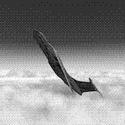

Welcome to my pico website! This website is static and lightweight to have the minimal impact on environment and will soon be 100% solar powered.
Bradley Pitts : "A week in e-waste? No better place to spend summer for American artist Bradley Pitts + French programmer Jonathan Tanant. The focus of their residency: a multi-mode, variable-gravity flight simulator of the Russian parabolic-flight aircraft."
Retour/Back